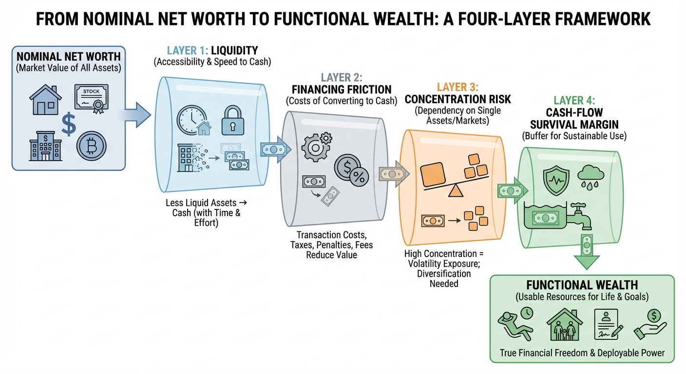

Are You Rich or Just in a Bubble? Recalculating Wealth in a 6% Mortgage World
In 2026, many households look richer on paper but feel tighter in monthly life. The disconnect is usually financing friction, not imagination.
The weirdest personal finance feeling in 2026 is this: your spreadsheet says you are doing great, but your monthly life feels tighter than it should. Your net worth may be up, your home value may still look high, your retirement accounts may have recovered, and yet buying your next house or even moving across town feels harder than it did when you had less on paper. That contradiction is not irrational. It is the signature of a post-cheap-money economy where asset values and financing costs moved in opposite directions, and the old wealth story stopped matching daily reality.

Freddie Mac’s Primary Mortgage Market Survey showed the 30-year fixed mortgage at 6.09% on February 12, 2026 (Freddie Mac, 2026). That one number changes the whole texture of household balance sheets. In 2021, many households experienced wealth growth in an environment where low borrowing costs amplified purchasing power. In 2026, many households still show those wealth gains on paper, but face a market where the cost of turning assets into lifestyle upgrades is much higher. If your model of wealth ignores financing conditions, it can tell a comforting story while your cash flow tells a very different one.
The point of this post is simple: in a 6% mortgage world, it is time to recalculate wealth in a way that reflects what your balance sheet can actually do for you. Not what it did in a zero-rate era. Not what a home portal says in perfect weather. What it can do now, with today’s borrowing costs, transaction frictions, liquidity constraints, and risk concentration.
The Net-Worth Illusion Is Real and Measurable
U.S. households did get richer, and the data is clear. The Federal Reserve’s 2022 Survey of Consumer Finances found real median net worth up 37% from 2019 to 2022, the largest three-year gain in the modern SCF period (Federal Reserve, 2023a). Median net housing value for homeowners rose from $139,100 to $201,000 over the same period, while the homeownership rate edged up to 66.1% (Federal Reserve, 2023a). Those are not fake gains. They are real balance-sheet changes.
But they were built in a specific macro regime. Home prices rose while financing costs were unusually low, which made payment capacity look stronger than it would in a more normal rate environment. Once mortgage rates moved back toward 6%, affordability reset. A household can keep the asset value gain and still lose practical mobility because replacing one house with another became far more expensive on a monthly basis. That is how people feel richer and constrained at the same time.
Think about a plain mortgage math example. On a $400,000 loan, principal and interest at 3% is roughly $1,686 per month. At 6%, the same loan is roughly $2,398 per month. That is about a $712 monthly jump before taxes, insurance, HOA, or maintenance. Over a year, that is more than $8,500 in additional carrying cost for the same debt amount. Over a decade, the affordability gap compounds into lifestyle differences, career decisions, and family planning choices. A balance sheet that ignores this financing delta is incomplete.
Why 6% Changes the Meaning of “Rich”
In low-rate years, a lot of households anchored to nominal net worth as the scoreboard. If the number went up, financial confidence went up. In a higher-rate environment, nominal net worth is still useful, but it becomes less predictive of optionality. Optionality means: Can you move without downgrading? Can you absorb a job transition? Can you self-fund a major life event without distress selling? Can you keep risk assets through volatility without liquidating at the wrong moment? Those are practical wealth questions, and the answers depend heavily on liquidity, debt structure, and financing costs.
A homeowner with $500,000 in home equity and low liquid reserves may look wealthier than a renter with $300,000 in diversified liquid assets. In an emergency, the renter may have more flexibility. The homeowner can be technically wealthier and functionally tighter if equity access is costly, timing is bad, or relocation requires taking on much more expensive debt. This is not a theoretical edge case. It is common in markets where homeowners are “rate locked” into low mortgage coupons and avoid moving because replacement financing is punitive.
That is why a 6% world creates a baseline problem. If you compare yourself to your own 2021 financing environment, you may feel stuck. If you compare yourself to broad historical mortgage norms, 6% is not extraordinary. If you compare your household to global wealth distributions, you may still rank very high. All can be true at once. Wealth is partly absolute, partly relative, and increasingly regime-dependent.
Housing Is the Largest Distortion in Most Household Wealth Snapshots
For most U.S. families, housing is the largest asset line. It is also the line with the most hidden assumptions. Market value is often treated as realizable value, but realization depends on timing, liquidity, and replacement cost. If you sell and buy in the same market, your gross gain can be offset by a higher financing burden on the next property. If you sell to downsize or relocate to a lower-cost area, you may realize more usable wealth, but only if transaction costs and tax implications do not erode too much of the spread.
In a 6% mortgage world, the affordability constraint shifts from principal amount to monthly payment tolerance. Many households can qualify for less house than they could at 3%, even when incomes are higher than before. That means housing wealth may remain large on paper while housing mobility declines in practice. A healthy personal wealth framework has to treat owner-occupied housing differently from liquid investment assets.
One practical adjustment is to run a “realizable housing value” line instead of headline home equity. Start with estimated net sale proceeds after broker fees, transfer costs, moving, and immediate repairs. Then subtract a financing reset penalty if your next move likely requires new debt at materially higher rates. The residual is a better indicator of what your housing wealth can actually fund.
The Cash Flow Layer: Where Wealth Stories Usually Break
Cash flow is not wealth, but it determines whether wealth survives stress. Many high-income households run thin free cash flow because fixed costs expanded during low-rate optimism: larger homes, multiple financed vehicles, private schooling, subscriptions, travel habits, and concentrated tax exposure. When rates normalized and inflation stayed sticky in key services, these households discovered they were “asset rich, cash flow fragile.”
This is the core of the new middle-class and upper-middle-class tension: income can be high, net worth can be high, and resilience can still be mediocre. A family earning well into six figures can be one job shock or one health event away from forced asset sales if liquidity is shallow and fixed obligations are rigid. The lesson is not austerity. The lesson is structure. Net worth without robust cash-flow margins is not fake wealth, but it is less durable wealth.
A useful benchmark is to evaluate how many months of essential spending your liquid assets can cover without forced selling of retirement accounts, concentrated stock, or home equity extraction. In a high-rate world, debt refinancing is less forgiving, so liquidity runway matters more than it did when cheap credit could patch over planning gaps.
Three Households, Same Headline Net Worth, Different Real Wealth
To make this concrete, consider three simplified households, each with a nominal net worth of $1.2 million.
Household A: The Equity-Heavy Homeowner. $900,000 is home equity in a primary residence, $200,000 in retirement accounts, $100,000 in cash. Mortgage rate is 2.9%, so monthly payment is manageable. On paper, this looks strong. In practice, flexibility is moderate. Most wealth is illiquid and tied to one property. If they move, they face higher borrowing costs and transaction drag.
Household B: The Diversified Liquid Investor. $500,000 in taxable investments, $500,000 in retirement assets, $200,000 in cash, renting by choice. Net worth equals Household A, but optionality is higher. They can deploy capital, relocate, or absorb shocks with less friction. They carry rent risk and market risk, but they are not rate locked into a housing decision.
Household C: The Concentrated Executive. $800,000 in employer stock, $250,000 in retirement assets, $150,000 in home equity, minimal cash. Same net worth headline, higher concentration risk. A company-specific drawdown can simultaneously hit compensation and assets, creating a double shock at exactly the wrong time.
These households are not equally rich in functional terms, even though nominal net worth is identical. Household B often has the strongest immediate resilience and choice architecture. Household A may have the best long-term cost basis if they stay put. Household C may have the highest upside and highest fragility. This is why the simple wealth number needs companion metrics.
A Better Wealth Model for a 6% Mortgage Economy
If you want a practical model, add four overlays to traditional net worth.
1) Liquidity-Adjusted Net Worth (LANW). Weight asset categories by realistic access. Cash and short-duration treasuries get full weight. Broad taxable index funds might get high weight minus volatility haircut. Retirement accounts get reduced near-term weight because access can carry penalties or sequencing risk. Primary residence equity gets lower immediate-use weight unless you have a clear monetization plan.
2) Financing Friction Score. Estimate what your major life transitions would cost at current borrowing rates. Moving, upsizing, downsizing, or refinancing should be stress-tested using today’s rates, not your existing mortgage coupon.
3) Concentration Risk Ratio. Track largest single asset exposure as a percent of total net worth and as a percent of liquid net worth. Concentration can be fine when intentional, but it should be explicit, not accidental.
4) Cash-Flow Survival Margin. Measure free cash flow after essential spending and fixed debt service, then map that to months of runway. High nominal wealth with low runway is a yellow flag.

These overlays do not replace net worth. They complete it. In a low-rate boom, the differences may look small. In a higher-rate regime, they become decisive.
The 6% Mortgage Filter in Practice
Start with your housing line. If your current mortgage is under 4%, run a relocation scenario that assumes replacement financing around current market rates. Use conservative assumptions on taxes, insurance, and maintenance. Many households discover that a seemingly lateral move materially increases monthly burn. That does not mean never move. It means recognize that your “wealth” is partly embedded in a low-cost financing contract, not just in the house itself.
Next, separate strategic from emotional spending. In constrained-rate environments, households often preserve visible status costs while cutting investment contributions. That can protect identity and damage long-term wealth accumulation. Reverse it where possible: defend savings rates first, then optimize visible consumption categories.
Then, test concentration. If one asset class or one company dominates your balance sheet, ask what a 30% drawdown does to both net worth and monthly confidence. Confidence matters because behavior under stress often drives outcomes more than spreadsheet averages.
Finally, create a regime-change policy. Decide in advance how you respond if rates stay near 6%, fall toward 5%, or rise again. Wealth plans fail most often when they are built for only one macro regime.
Why This Topic Is So Emotionally Charged
“Am I rich?” sounds like a number question, but it is identity and security compressed into one sentence. During asset booms, people attach lifestyle narratives to mark-to-market gains. When financing conditions tighten, those narratives can break before the balance sheet does. That creates cognitive dissonance: external signals say success, internal signals say vulnerability.
Social comparison amplifies this. You may outrank national medians and still feel behind in your peer market. You may appear wealthy to one baseline and constrained to another. Neither feeling is automatically wrong. Baseline choice changes interpretation. The mistake is treating one baseline as universal truth.
This is exactly where many wealth tools fail users. They present one rank, one percentile, one number, and imply finality. Better tools show multiple baselines and explain why each is useful: local cost pressure, national standing, global context, and life-stage comparables. Wealth is multidimensional. The interface should admit that openly.
A Reality Check for High Earners
High income helps but does not immunize against poor wealth architecture. In fact, high earners can mask fragility for longer because cash inflow can cover structural inefficiency until a shock hits. The common pattern is lifestyle inflation outrunning risk management: high fixed commitments, low liquidity buffer, concentrated upside bets, and optimistic assumptions about future refinancing conditions.
If this sounds familiar, the correction is usually straightforward but psychologically hard. Slow fixed-cost growth, accelerate liquid reserve targets, diversify concentrated exposure over a defined schedule, and align housing decisions with financing realities instead of past-rate nostalgia. None of this is glamorous. All of it is effective.
Case Study: The “Paper Millionaire” Relocation Trap
Consider a household that bought in 2021 with a 3% mortgage and now has large unrealized home equity due to local appreciation. They receive a career opportunity in a similar-cost metro. They assume they can "trade sideways" because their equity has grown. The move analysis says otherwise. New mortgage at roughly 6% increases monthly principal and interest by hundreds of dollars even with comparable loan size. Add higher property taxes and insurance in the target market, and the family’s free cash flow tightens sharply. They are wealthier on paper but poorer in monthly optionality.
This is the relocation trap of the 6% era. The fix is not avoiding opportunity. The fix is modeling the full move equation before emotional commitment: after-tax compensation change, housing carry change, transaction costs, and downside scenario if one income drops temporarily. When households run this model early, decision quality improves dramatically.
How to Recalculate Your Wealth This Quarter
Step 1: Compute nominal net worth the standard way. Keep this number. It still matters.
Step 2: Build a liquidity table by asset class and assign realistic access weights.
Step 3: Revalue housing as "realizable wealth" after sale friction and replacement financing reality.
Step 4: Run a 6% mortgage scenario for any likely housing transition in the next three years.
Step 5: Measure concentration and set guardrails, especially for employer stock and single-asset real estate bets.
Step 6: Calculate cash-flow survival margin and set a minimum runway rule.
Step 7: Track progress quarterly, but interpret trends annually to avoid overreacting to market noise.
This process often changes behavior quickly. Households stop chasing cosmetic wealth milestones and start optimizing for resilience and choice. In uncertain regimes, that is the more useful definition of rich.
The Baseline Problem: You Can Be Top-Tier in One Lens and Fragile in Another
Most wealth confusion comes from baseline switching without realizing it. People compare themselves to one group when they feel behind and another group when they feel ahead. You can rank strongly against global adult wealth and still face local affordability pressure that feels punishing. You can outrank national medians and still be overextended relative to your city’s housing and childcare cost structure. None of this means rankings are useless. It means a single ranking is never enough for meaningful decisions.
A better approach is to run three baselines side by side. First, a local-operating baseline asks whether your current income and liquid assets support your lifestyle under your city’s cost structure. Second, a national baseline shows where your household sits in broader U.S. distribution terms. Third, a global baseline gives perspective on absolute standing and consumption privilege. Each answers a different question. Mixing them carelessly creates emotional noise. Using them intentionally creates clarity.
This also explains why online wealth arguments escalate quickly. One person is talking about relative privilege, another is talking about monthly pressure, and both assume they are debating the same thing. In a 6% mortgage environment, this conflict gets sharper because financing constraints make local baseline stress more visible, even among households with high paper wealth.
The “Locked-In Rate” Effect and the Mobility Tax
A lot of U.S. homeowners now hold mortgages far below current market rates. That low coupon is an invisible asset, but it is also a trap if households need flexibility. If your current mortgage is 3% and replacement debt is near 6%, moving for neutral housing quality can carry a steep monthly penalty. That penalty functions like a mobility tax: it discourages geographic movement, narrows career choices, and increases path dependency in household decisions.
In practical terms, households with low-rate mortgages may decline better jobs, delay family structure changes, or accept longer commutes to preserve their financing advantage. Economists can debate whether this is efficient or inefficient at the macro level. At the household level, it is straightforward: your mortgage coupon became part of your wealth stack, and leaving it can be expensive.
To quantify this, run a replacement-cost delta for every potential move. Estimate current monthly housing carry versus projected carry under today’s rates, including taxes and insurance. Then map the difference to your free cash flow. If the move consumes most discretionary margin, your “wealth gain” from prior appreciation may not be functionally deployable without lifestyle compression.
Sequence Risk Is Not Just for Retirees Anymore
Sequence risk is usually discussed near retirement: poor early returns can damage long-term outcomes when withdrawals begin. In the current environment, sequence risk has moved earlier in life for many households because financing and asset prices can now swing in opposite directions. Imagine this pattern: equity markets correct, home listings soften, and borrowing costs stay elevated. A household needing liquidity in that window can face losses across multiple channels at once.
This matters for mid-career families making large decisions, not just retirees. Home upgrades, business launches, private education commitments, and parental support obligations all become more sensitive to timing when liquidity is thin. A household may still look wealthy in annual snapshots but struggle if major obligations coincide with adverse sequence windows.
One defense is to separate strategic assets from operational reserves. Strategic assets support long-term growth. Operational reserves protect decision quality during bad timing. In high-uncertainty regimes, underfunding operational reserves is one of the costliest and most common planning errors.
What a “Functional Wealth Score” Could Look Like
If you are building or using a wealth tool, convert concepts into a scorecard that can be tracked quarterly. Start with nominal net worth at 100 points. Add or subtract based on four adjustment domains: liquidity quality, financing friction, concentration exposure, and cash-flow survival margin. Keep the math transparent so users can see why score changes happen.
Example structure: liquidity quality contributes up to 30 points based on the share of assets that can be accessed quickly without severe penalties. Financing friction contributes up to 25 points and declines when expected borrowing rates for planned transitions materially exceed current obligations. Concentration contributes up to 20 points and falls when a single exposure dominates liquid net worth. Cash-flow survival margin contributes up to 25 points and rises with stronger essential-expense runway. The absolute point design can vary. The key is consistency and explainability.
Users then get two numbers: nominal net worth and functional wealth score. The gap between them becomes actionable. If nominal net worth rises while functional score falls, the household is likely adding fragility. If both rise, resilience is improving. This dual-readout model is more honest than one number pretending to capture everything.
Three Common Mistakes in a 6% World
Mistake 1: Counting every illiquid gain as immediately spendable wealth. Home equity, private business valuation, and retirement accounts are valuable. They are not all equal for near-term optionality. Households that ignore access friction overcommit quickly.
Mistake 2: Treating low-rate debt as irrelevant once fixed. Existing low-rate debt is often a competitive advantage. The mistake is pretending it does not affect future choices. It should be modeled explicitly in every major decision.
Mistake 3: Confusing high income with high resilience. Income is flow. Wealth resilience is stock plus structure. High earners with weak liquidity and high fixed burn can be less resilient than moderate earners with disciplined reserves and diversified assets.
What to Do if You Discover You Are “Bubble Rich”
First, do not panic and do not overcorrect. Bubble-rich does not mean fake-rich. It means your wealth is more sensitive to regime conditions than you assumed. Most households can improve this meaningfully within 12 to 18 months with focused structural changes.
Start by setting a liquid reserve target in months of essential spending, then automate contributions until the target is reached. Next, run a concentration reduction plan for any oversized single exposure, using time-based rules instead of emotional market timing. Then review housing strategy with realism: if moving is likely, build financing assumptions around current rates rather than old coupons.
After that, defend savings quality. If budget pressure rises, cut flexible lifestyle categories before cutting long-term contributions. This feels uncomfortable socially because lifestyle cuts are visible. Cutting compounding is less visible and usually more expensive over time. Finally, build a decision calendar so major commitments are spread out. Clustering big commitments in one macro window increases sequence risk.
A 90-Day Recalibration Plan
Days 1 to 15: Build your balance-sheet map. Classify each asset by liquidity tier. Identify fixed obligations and refinancing sensitivity. Capture current effective tax drag and insurance burden.
Days 16 to 30: Run stress scenarios. Use 5%, 6%, and 7% borrowing-rate assumptions for any potential move or refinance. Model a moderate equity drawdown and a temporary income interruption. Identify the first failure points.
Days 31 to 45: Decide structural moves. Set reserve targets, concentration limits, and debt rules. Establish thresholds that trigger action, such as minimum runway months or maximum concentration ratios.
Days 46 to 75: Execute mechanics. Redirect cash flows, rebalance exposure, adjust recurring obligations, and rebuild savings automation. Do small operational fixes too: subscription pruning, insurance shopping, and tax-withholding corrections.
Days 76 to 90: Lock governance. Schedule quarterly reviews with the same scorecard and assumptions. Track direction, not perfection. The objective is to make your financial system anti-fragile across rate regimes.
Where This Leaves the “Am I Rich?” Question
In a 6% mortgage world, rich is less about one static number and more about repeatable freedom under constraint. Can you absorb shocks? Can you make life moves without destabilizing the system? Can you take opportunities without taking fragile leverage? If yes, you are rich in the way that matters. If not, you may still be wealthy on paper but under-optimized for the current regime.
The upside is that this is fixable. Unlike market direction, wealth structure is mostly under your control. You can improve liquidity quality, reduce concentration, reshape fixed burn, and model decisions with realistic financing assumptions. Those actions close the gap between paper wealth and lived wealth. In this environment, that gap is the real story.
Key Takeaways
A 6% mortgage environment changes what net worth can actually do for you, even if your balance sheet still looks strong.
Housing equity is real wealth but often low-immediacy wealth, especially when replacement financing is expensive.
Liquidity, concentration risk, and cash-flow survival margin are now as important as headline net worth for real financial resilience.
In this regime, the most useful definition of rich is not a rank screenshot. It is durable optionality under stress.
Source List
Freddie Mac (February 12, 2026). Primary Mortgage Market Survey
Freddie Mac (February 12, 2026). Mortgage rates inch down (press release distribution)
Federal Reserve (October 18, 2023). Changes in U.S. Family Finances from 2019 to 2022
Federal Reserve (2023 bulletin PDF). Survey of Consumer Finances key findings and tables
UBS (June 18, 2025). Global Wealth Report 2025 overview
UBS (June 18, 2025 media release PDF). Global Wealth Report 2025 media release
Stress-test the lifespan side of this balance-sheet story.
Open the matching LifeMeter scenario with a prefilled planning profile so the wealth case and the health-runway case can be read together.